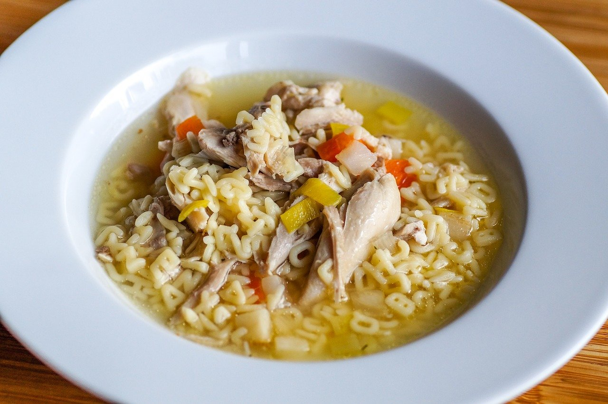

Comfort Soup Recipes
Creamy Wild Rice

Tender cubes of chicken, fresh vegetables and wild rice make this soup a hearty classic.
Ingredients
6 tbsp butter
1 medium yellow onion
2 ribs of celery
2 fresh carrots
6 tbsp flour
4 cups chicken broth
2 cups cooked wild rice
2 cups heavy whipping cream
1 tsp of dried sage
1 tsp of dried thyme
Salt and pepper to taste
Cooking Instructions
In large stock pot melt butter.
Once melted, add onion, carrot, and celery. Cook until tender.
Add flour and stir to combine. Cook roux until it gives off a nutty smell.
Add chicken broth. Simmer until slightly thickened.
Add rice and simmer for 10 more minutes.
Add seasonings and heavy whipping cream. Salt and pepper to taste.